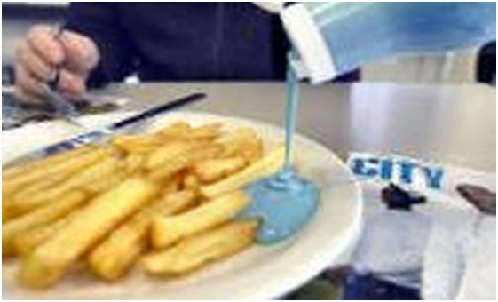
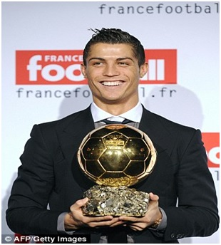

Chương 39

uy Ronaldo đá hỏng phạt đền trong cả bán kết lẫn chung kết Champions League năm 2008, không ai có thể phủ nhận công trạng anh. Siêu sao BĐN lập công đến 42 lần trên các mặt trận; các bàn thắng của anh được ghi từ đủ tình huống, mọi tư thế, bằng chân phải, chân trái, cũng như đánh đầu. Tất cả những danh hiệu cá nhân cao quý nhất đều được trao về Ronaldo: Cầu Thủ Xuất Sắc Nhất Nước Anh (FWA và PFA), Vua Phá Lưới Ngoại Hạng, Chiếc Giày Vàng Châu Âu, Quả Bóng Vàng Châu Âu, và Cầu Thủ Xuất Sắc Nhất Thế Giới của FIFA. Ronaldo là cầu thủ đầu tiên của United giành Quả Bóng Vàng kể từ George Best năm 1968. Trước anh, chưa từng có Quỷ Đỏ nào giành Chiếc Giày Vàng hay danh hiệu Cầu Thủ Xuất Sắc của FIFA. Ngày Ronaldo đến Old Trafford, người ta nghi ngờ, không biết anh kế thừa nổi chiếc áo số 7 của Cantona và Beckham hay không. Câu trả lời nay đã rõ giữa thanh thiên bạch nhật.
Sau vụ rắc rối với Rooney, lúc Ronaldo tính bỏ sang Tây Ban Nha, Sir Alex có nói một câu: "Hãy ở lại! Thầy sẽ dùng con làm hạt nhân, xây dựng đội hình chung quanh con". Ông đã thực hiện lời hứa ấy. Để hình dung tầm quan trọng của Ronaldo đối với United trong mùa 2007-2008, hãy nhìn vào tổng số bàn thắng của đội bóng: Một mình Ronaldo đứng chót vót trên cao với 42 bàn, xa xa phía dưới là Tevez (19) và Rooney (18). Người ghi bàn nhiều thứ tư, Saha, chỉnăm lần lập công. Các tiền vệ Quỷ Đỏ không ai có quá bốn bàn, chẳng như ngày xưa: Những Scholes, Giggs, Beckham, Kanchelskis, Sharpe thường xuyên ghi hơn 10 trái mỗi mùa.
Những năm đầu thế kỷ 21, ai cũng nhất trí hai cầu thủ vĩ đại nhất hành tinh là Lionel Messi và Cristiano Ronaldo. Điều gây tranh cãi là ai giỏi hơn giữa hai người. “Theo tôi, Ronaldo hơn Messi về thể hình”, Sir Alex nhận xét, “Cũng hơn về tốc độ và không chiến, lại thuận cả hai chân. Song Messi giữ thăng bằng tuyệt vời, mỗi lần bóng chạm chân, cậu ta như biểu diễn ma thuật…Tôi không quyết được ai giỏi nhất. Xếp ai trong họ vào vị trí thứ hai đều là bất công”.
Từng mất Ronaldo về tay United, nay Real Madrid quyết tâm mua anh bằng được. Barca có Messi, Real tất phải sở hữu Ronaldo cho cân bằng. CLB TBN hỏi mua tân chủ nhân Quả Bóng Vàng với giá 70 triệu bảng, hứa hẹn trả lương cho anh 15 triệu bảng một năm. Số tiền quá lớn khiến Ronaldo không cưỡng nổi sự cám dỗ. “Nếu thật họ chịu trả như thế”, anh lên tiếng, “tôi sẽ đến Real”.
Lẽ tất nhiên, Ferguson không đời nào chịu bán cầu thủ hạt nhân. “Ronaldo hãy còn bốn năm hợp đồng”, ông quả quyết, “Nếu không muốn chơi cho United nữa thì phải xuống đá cho đội hình hai…Bán cho Real ấy ư? Một con virus tôi cũng không bán!” Không được đi, Ronaldo bực bội, phàn nàn mình bị đối xử như nô lệ! Nô lệ thời hiện đại quả khác biệt với ngày xưa, chẳng bị đòn roi hành hạ chi, mỗi tuần chỉ chạy trên sân trong 90 phút độ một hai lần, lãnh lương 120000 bảng, và được hàng triệu người thần tượng!
Thấy học trò quyết tâm dứt áo, Sir Alex biết giữ cũng không được. Trói chân Ronaldo, không cho rời, anh sẽ điên lên không thèm đá, lúc ấy xôi hỏng mà bỏng cũng không. Thay vì làm thế, Sir thuyết phục CR7 ở lại Old Trafford thêm một mùa. Sau đó, nếu Real vẫn muốn mua, và vẫn chịu trả giá cao, United sẽ để anh ra đi.Dụng ý Fergie khá rõ:Ronaldo đang trên đỉnh cao sự nghiệp, anh ở thêm một năm, CLB sẽ có nhiều khả năng bảo vệ thành công danh hiệu VĐQG và vô địch châu Âu. Mà biết đâu, khi bảo vệ được Cúp C1, Ronaldo lại đổi ý, chịu ở lại?
Không những giữ được Ronaldo, Ferguson còn tăng cường lực lượng, sắm cặp hậu vệ sinh đôi 18 tuổi người Brazil Rafael và Fabio da Silva, cùng tiền đạo Dimitar Berbatov. Khi United đang đàm phán mua Berbatov từ Tottenham, Manchester City bỗng nhảy vào định hớt tay trên, sẵn sàng trả 30 triệu bảng, buộc Quỷ Đỏ phải nâng giá lên 30.75 triệu mới mua nổi ngôi sao người Bulgaria.
Ferguson vốn coi thường City, người hàng xóm cùng thành phố. “Đó là một đội bóng nhỏ, với một tinh thần nhỏ”, ông chế giễu, “Ngày này qua ngày khác, họ chỉ nói về Manchester United, chẳng biết gì khác”. Lời trên dĩ nhiên là thậm xưng, nhưng cũng có cơ sở của nó. Trên một phương diện nhất định, City đúng là chỉ biết mỗi United: Hễ nhìn thấy màu đỏ, họ cho đó là United (tại sao không là Liverpool hay một đội nào khác?). Nhân viên làm việc cho City, không ai được phép đi xe màu đỏ; trong những nhà hàng của City, ngay cả sốt cà chua cũng màu…xanh!

Trong nhà hàng của City, sốt cà chua không được mang màu đỏ (Ảnh: Manchestereveningnews.co.uk)
Có điều, City năm 2008 đã không còn là City của ngày xưa. Chelsea có “bố già” Nga Roman Abramovich, City nay cũng có ông hoàng Ả Rập tên dài ngoằng ngoẵng Mansour bin Zayed bin Sultan Al Nahyan đứng chống lưng. Y như Abramovich, ông hoàng này vãi tiền như nước cho CLB của mình sắm cầu thủ. Chụp hụt Berbatov, City không tiếc nuối, bởitrước đó, họ đã bỏ ra hơn 120 triệu bảng mua đến 11tân binh, đủ để lập một đội hình hoàn toàn mới. Các vị lãnh đạo City thậm chí hỏi mua Ronaldo với giá 135 triệu. Song Ronaldo dù mê tiền đến đâu cũng vẫn còn lý trí, chẳng dại chuyển sang đội bóng đại kình địch.
Người ra đi hóa ra lại là Carlos Queiroz. Ông trở về BĐN, lãnh trách nhiệm dẫn dắt ĐTQG. Sir Alex đánh giá cao Queiroz, coi ông là trợ lý giỏi nhất mình từng có, và định cho ông kế nhiệm khi mình về hưu. Mất cấp phó đắc lực, Sir rất tiếc, nhưng không trách cứ gì, vì ai có thể từ chối lời gọi mời của quê hương? Thế vào chỗ Queiroz, Sir bổ nhiệm học trò cũ Mike Phelan.
Vắng Ronaldo đến cuối tháng chín vì chấn thương, United khởi đầu mùa giải mới khá tệ, rơi xuống tận hạng 15. Khi CR7 trở lại và nổ súng liên tục, đội từ từ thăng tiến. Ngày 30 tháng 11, 2008, trong trận gặp gã nhà giàu mới nổi City, bất chấp việc Ronaldo nhận thẻ đỏ rời sân, Quỷ Đỏ vẫn thắng 1-0 bằng bàn duy nhất của Rooney.
Khá bất ngờ, đội liên tục dẫn đầu bảng không phải Chelsea, mà là cựu hoàng Liverpool. Đầu tháng 1, 2009, Liverpool vẫn gác United bảy điểm. Như thường lệ, mỗi lúc bị bỏ lại đằng sau, Ferguson sẽ chọc ngoáy đối thủ. “Ôi tôi biết thừa!”, ông thả mồi, “Nửa sau mùa giải căng thẳng lắm, Liverpool thế nào cũng run rẩy cho mà xem”. HLV Liverpool, Rafa Benitez, cắn phải câu, nổi giận đùng đùng. Sir Alex nói mỗi một lời, còn ông ta cầm giấy đọc một bài diễn văn dằng dặc hạch tội Sir:
-Chính Manchester United mới là đội đang run, họ run vì chúng tôi đang đứng đầu. Hôm nay tôi sẽ nói thẳng, nói hết cho các bạn nghe nhé. Trận gặp Wigan năm ngoái ấy, Rio Ferdinand rõ ràng chơi bóng bằng tay trong vòng cấm địa, vậy mà trọng tài không thổi phạt đền. Nhờ vậy, họ mới thắng trận, và nhờ thắng trận đó mới vô địch…Ông Ferguson bị điều tra tội phát ngôn bừa bãi về các trọng tài Martin Atkinson và Keith Hackett, nhưng cuối cùng chẳng bị phạt gì cả. HLV nào cũng bị phạt, riêng Ferguson là không ai dám phạt…Cứ tuần nào có đá banh là United gây áp lực lên trọng tài. Cứ đá ở Old Trafford là đội khách có người bị đuổi, đội chủ nhà chẳng thấy ai bị đuổi bao giờ…
Hai ngày sau bài “diễn văn” của Benitez; Vidic, Rooney, và Berbatov cùng nhả đạn, giúp United thắng Chelsea 3-0. Trong vòng một tuần tiếp theo, giữa lúc Liverpool liên tục hòa, Quỷ Đỏ lần lượt đả bại Wigan và Bolton, chính thức lên ngôi đầu bảng. Có lẽ Benitez trước kia chưa run, sau khi Ferguson “gợi ý” thì run thật!
Tháng ba về cũng là lúc người hâm mộ United mơ về một cú…ăn năm. Danh hiệu đầu tiên, Cúp Vô Địch Thế Giới Các CLB, đã vào tay quỷ từ tháng 12, 2008. Đội giành cúp này sau các chiến thắng 5-3 trước Gamba Osaka (Nhật) và 1-0 trước Liga de Quito (Ecuador). Danh hiệu thứ hai là Cúp Liên Đoàn. Do United phải căng sức thi đấu trên nhiều mặt trận, trong trận chung kết Cúp Liên Đoàn, Ferguson để các trụ cột nghỉ ngơi, tung ra sân đội hình gồm nhiều cầu thủ trẻ, ít kinh nghiệm như Ben Foster, Darron Gibson, Jonny Evans, Danny Welbeck. Đội hình ấy vẫn đủ sức cầm chân Tottenham suốt 120 phút, để rồi thủ thành Foster xuất sắc cản phá thành công hai cú penalty, đem lại chiến thắng cho đội nhà sau những loạt luân lưu.
Đang ngon trớn, United bỗng sảy chân, bị Liverpool đè bẹp 4-1 ngay tại Old Trafford. Chưa hết sốc, đội thua tiếp Fulham. Trận kế tiếp gặp Aston Villa, Ronaldo sớm mở tỷ số, nhưng đối thủ kịp lật ngược thế cờ, gác lại 2-1. Tương lai Quỷ Đỏ trở nên mờ mịt, bởi nếu thua trận thứ ba liên tiếp, họ sẽ mất ngôi đầu. Giữa tình thế nước sôi lửa bỏng, Ferguson đánh một nước cờ vô cùng kỳ quái: Tung vào sân Federico Macheda, cầu thủ 17 tuổi trước đó chưa bao giờ khoác áo đội một. Thế cờ liều phát huy tác dụng: Sau màn thay người, Ronaldo gỡ hòa, và đến phút 93, đích thân Macheda tung sút đẹp mắt, ấn định tỷ số 3-2.
Sáu ngày sau, cũng nhờ Macheda lập công, United tìm được trận thắng khít khao 2-1 trước Sunderland. Hai khoảnh khắc xuất thần của tiền đạo người Italy đập tan giấc mơ VĐQG sau 19 năm của Liverpool, vì từ đó trở đi, đội quân Fergie lấy lại sự tự tin vốn có, liên tục giành thắng lợi[1]. Sau trận hòa không bàn thắng với Arsenal trong trận áp chót mùa giải,Unitedchính thức đăng quang, đoạt chức VĐQG Anh lần thứ 18. Tuy thế, giấc mộng ăn năm không thể thành hiện thực, do trước đó, đội đã thua Everton tại bán kết Cúp FA.
Hai cầu thủ United gây ấn tượng mạnh nhất tại giải ngoại hạng là Edwin van der Sar và Ryan Giggs. Suốt từ ngày 15 tháng 11, 2008 đến 18 tháng 2, 2009, thủ thành người Hà Lan lập kỷ lục bắt 14 trận liên tiếp không hề thủng lưới bàn nào. Tính cả mùa giải, anh lập lại kỷ lục của Petr Cech mùa 2004-2005: giữ sạch lưới trong 21 trận. Trong khi đó, lão tướng Ryan Giggs trải qua một mùa bóng hồi xuân. Tuổi đã cao, không còn những pha đột phá xé gió bên đường biên, song với kinh nghiệm đầy mình, Giggs đọc thế trận tốt hơn. Anh chơi bó vào trung tâm, thường xuyên kiến tạo cơ hội cho đồng đội với những đường chuyền thông minh, sắc sảo. Năm 2009, Giggs nhận giải Cầu Thủ Xuất Sắc Nhất Nước Anh của PFA, và VĐV Thể Thao Xuất Sắc Nhất Đại Anh Quốc của BBC.
Ở tuổi 36, Giggs là cầu thủ lớn tuổi nhất được PFA tôn vinh. Gần tứ tuần, Giggs vẫn tỏa sáng, ấy là vì anh luôn duy trì nếp sống lành mạnh, điều độ, không ăn chơi, bê tha, lúc nào cũng chăm chỉ rèn luyện. Ngoài những bài tập thông thường, Giggs còn tập cả vũ ballet và yoga. Nhờ tập yoga đều đặn mà anh dẻo dai lạ thường.
Có lẽ do tâm hồn đã sang Bernabeu, Ronaldo không xuất sắc bằng năm trước. Dù vậy, ở Cúp C1, anh vẫn để lại dấu ấn sâu đậm. Nhờ hai bàn của Vidic và Ronaldo, United loại Inter Milan tại vòng 2, trong trận đấu gợi nhớ ký ức 1999. Cũng chính Ronaldo sút trái phá từ cự ly 40m, giúp CLB thắng Porto 1-0 trong trận tứ kết lượt về, sau khi bị cầm hòa 2-2 đầy bất lợi nơi Old Trafford.
Năm ngoái, có đến ba CLB Anh vào tranh bán kết Champions League: Liverpool, Chelsea, Manchester United. Mùa này vẫn vậy, chỉ khác chỗ Arsenal thế chân Liverpool. United may mắn tránh được hai đối thủ cứng cựa hơn là Chelsea và Barcelona, chỉ phải gặp Pháo Thủ. Lượt đi, đá sân nhà, đội hơi gây thất vọng, chỉ thắng 1-0 nhờ công John O’Shea. Tuy nhiên, lượt về tại Emirates chứng kiến một Quỷ Đỏ thăng hoa đầy hứng khởi. Ngay phút thứ 8, Park Ji Sung đã tận dụng sai lầm của hậu vệ Arsenal, ghi bàn mở tỷ số. Ba phút sau, từ vị trí đá phạt cách khung thành xa tít tắp, Ronaldo quất bóng như hỏa tiễn. Thủ thành Almunia chắc không ngờ đối phương dám sút, nên phản ứng hơi chậm, không cứu nổi bàn thua. Bước vào hiệp hai, Ronaldo thêm lần nữa tỏa sáng. Anh đánh gót phát động đường phản công cho United, rồi bắt tốc độ chạy suốt chiều dài sân, đón đường căng ngang của Waye Rooney, ghi bàn thắng thứ ba. Bàn rút ngắn tỷ số của Arsenal chỉ mang tính danh dự.
Sau trận đấu, Patrice Evra nhận xét Arsenal đá với United chẳng khác con nít chơi cùng người lớn. Lời anh không quá đáng. Chính sách sai lầm của Wenger đã biến Pháo Thủ từ một CLB cực mạnh, kỳ phùng địch thủ của Quỷ Đỏ, biến ra con hổ giấy, mãi trắng tay không danh hiệu. Cộng cả lại, số danh hiệu đạt được của 11 cầu thủ đá chính trong đội hình United vượt trên một trăm. Phía Arsenal chỉ có 13, mà 8 trong số đó ghi danh Mikael Silvestre từ hồi còn chơi ở Old Trafford!
Vượt qua Arsenal, United gặp lại Barcelona trong trận cuối cùng.Lịch sử lần này không đứng về phía quỷ: Từ khi Cúp C1 mang tên Champions League cho đến nay, chưa một CLB nào bảo vệ thành công danh hiệu. Vả lại, giữa hai đội bóng ngang sức ngang tài như United và Barca, rất khó có chuyện đội này thắng đội kia hai trận liên tiếp. United vừa thắng năm ngoái, nên năm nay, người ta có cảm giác Barca sẽ lên ngôi.
Trận thắng trước khiến Ferguson trở nên tự tin. Ông quyết định không chơi phòng ngự nữa, mà tấn công sòng phẳng với đối thủ. Đêm chung kết ở Rome, United tạo ra ba cơ hội làm bàn ngay 10 phút đầu tiên, nhưng phung phí cả ba. Trong những trận đấu lớn, chỉ một cơ hội bỏ lỡ có thể khiến mọi nỗ lực đổ sông đổ biển, huống hồ đến ba. Đánh phủ đầu bất thành, Quỷ Đỏ để rơi thế trận vào tay Barcelona. Eto’o rồi Messi lần lượt lập công, đem cúp bạc về Tây Ban Nha. Fergie sau này thừa nhận, nếu ông chịu giữ chiến thuật một năm trước, kết quả có thể đã khác[2].
Không Cúp C1, hy vọng mỏng manh giữ lại Ronaldo tan thành mây khói. “Trái tim tôi nằm tại Manchester”, Ronaldo nói sau chức vô địch Ngoại Hạng, “Từ khi tôi đến đây, nơi này đã thành nhà, và HLV trưởng chính là người cha thứ hai của tôi”. Chỉ một tháng sau, anh chuyến đến Real Madrid với cái giá kỷ lục thế giới 80 triệu bảng! Yêu United? Kính trọng Ferguson? Đã hẳn, nhưng đồng tiền vẫn có sức quyến rũ mạnh hơn. Nếu Sir Alex là cha thì tiền là ông nội!
Thật sự, ngay từ khi mới mua Ronaldo, BHL United đã biết khó giữ anh về lâu về dài. “Alex ạ, chỉ cần nó chơi cho bác năm năm là bác trúng mánh rồi đấy”, Queiroz nói cùng Ferguson, “Chưa từng có cầu thủ BĐN nào sang CLB nước ngoài năm 17 tuổi và ở lại CLB đó suốt năm năm đâu”. Tổng kết lại, Ronaldo chơi cho Fergie đến sáu mùa, đá 292 trận, ghi 118 bàn, giúp đội vô địch châu Âu, vô địch thế giới, giành ba chức vô địch Ngoại Hạng, một Cúp FA, hai cúp Liên Đoàn. Thế đã là hời!

Ronaldo và Quả Bóng Vàng 2008 (Ảnh: Dailymail.co.uk)
Chú thích:
[1] Đáng tiếc, sau đó Macheda không phát huy được tiềm năng. Anh không trụ lại nổi Old Trafford, phải dạt sang Cardiff City.
[2] Trong đội hình Barca trận này có Gerard Pique, cầu thủ trưởng thành tại Old Trafford. Trong khoảng 2007-2012, United để mất ba viên ngọc thô: Gerard Pique, Giuseppe Rossi và Paul Pogba. Pique trở thành trụ cột của ĐTQG TBN và Barcelona; Rossi tỏa sáng cùng Villareal và Italy, còn Pogba chơi cho Juventus, được bầu là Cầu Thủ Trẻ Xuất Sắc Nhất World Cup 2014 trong màu áo tuyển Pháp.